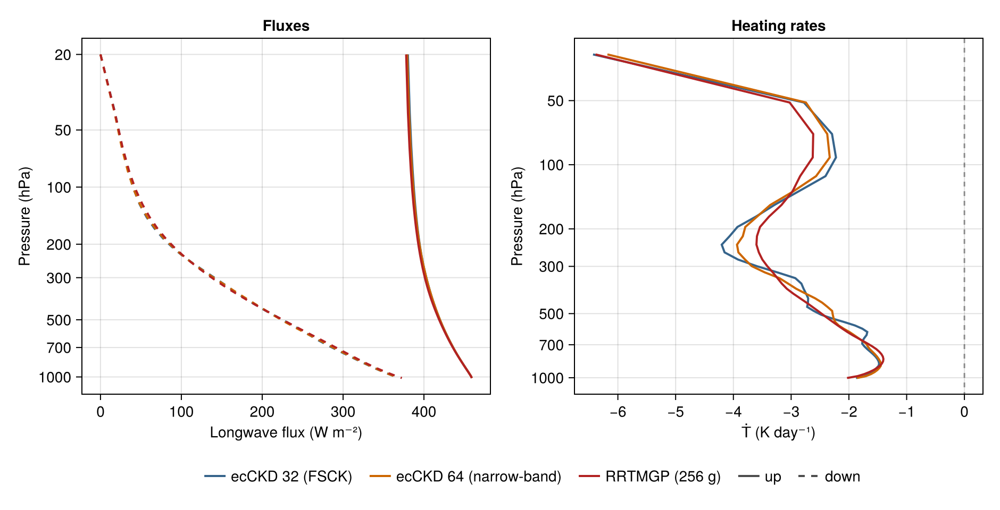

Correlated-k model spread: clear-sky longwave
Every correlated-k radiation model makes a k-reduction choice: how many g points, what band structure, which training data. This example runs a small family of such models on one clear-sky column defined once physically and shows the spread of their longwave fluxes and heating rates. The family is the ecCKD 32-g-point FSCK model, the ecCKD 64-g-point narrow-band model, and RRTMGP (256 g points, through the package's NumericalRadiationRRTMGPExt adapter) — three members of one model class on equal footing. Nothing here ranks a model or measures error against a truth; the spread itself is the message — a measured correlated-k implementation spread on this column.
One physical column, two gas representations
The shared definition is the physical state: pressures, temperatures, and per-gas dry-air volume mixing ratios $χ$ (RRTMGP's native convention, established by its compute_col_gas_kernel!). RRTMGP consumes the mixing ratios directly; the ecCKD path consumes layer molar amounts in mol m⁻², so the conversion between the two representations is written out explicitly below and cross-checked against RRTMGP's own column computation.
using NumericalRadiation
using NCDatasets # NetCDF reader extension (ecCKD files)
using ClimaComms # RRTMGP adapter extension trigger …
using RRTMGP # … and RRTMGP itself
using PrintfThe column: $N$ layers with interface pressures $pᵢ$ (Pa, top of atmosphere first), layer pressures $p$, an idealized capped lapse rate, and analytic moisture and ozone mixing-ratio profiles:
N = 48
pᵢ = collect(range(2_000, 101_325; length = N + 1))
p = 0.5 .* (pᵢ[1:end-1] .+ pᵢ[2:end])
Tₛ = 300
T = clamp.(Tₛ .- 65 .* (1 .- (p ./ 101_325) .^ 0.286), 200, Tₛ)
Tᵢ = clamp.(Tₛ .- 65 .* (1 .- (pᵢ ./ 101_325) .^ 0.286), 200, Tₛ)
χH₂O = @. 0.015 * (p / 101_325)^3 + 3e-6 # moist below, dry aloft
χO₃ = @. 3e-8 + 5e-6 * (2_000 / p) # crude ozone increase aloft
χCO₂ = 420e-6
χCH₄ = 1.8e-6
χN₂O = 330e-9The hydrostatic relation gives the dry-air molar amount $nᵈ$ of each layer. With $χ$ relative to dry air, the layer's mass per area is $nᵈ (m^d + χ_{H₂O}\, m^v)$, so (dry-air molar-mass convention, matching RRTMGP):
g = 9.80665 # m s⁻²
mᵈ = 0.028964 # kg mol⁻¹
mᵛ = 0.018016 # kg mol⁻¹
dry_air_amounts(χH₂O, pᵢ) =
[(pᵢ[k + 1] - pᵢ[k]) / (g * (mᵈ + mᵛ * χH₂O[k])) for k in 1:(length(pᵢ) - 1)]
nᵈ = dry_air_amounts(χH₂O, pᵢ) # mol m⁻²Each representation gets its own ColumnAtmosphere. Gas-set parity needs care on the ecCKD side: the tabulated composite background contains the reference contribution of every tabulated gas, and activating a gas subtracts its reference mole fraction times the composite amount before adding the requested amount. A gas left out of names is therefore kept at its reference abundance, not removed. So the full tuple is activated here: CH₄ and N₂O carry the same abundances as the RRTMGP side, and the CFCs are activated with zero amount — which removes their reference contribution — because RRTMGP's clear-sky lookup has no CFC fields. Both surfaces emit as blackbodies.
ecckd_atmosphere = ColumnAtmosphere(;
pressure_layers = p,
pressure_interfaces = pᵢ,
temperature_layers = T,
temperature_interfaces = Tᵢ,
gases = (composite = nᵈ,
h2o = χH₂O .* nᵈ,
o3 = χO₃ .* nᵈ,
co2 = χCO₂ .* nᵈ,
ch4 = χCH₄ .* nᵈ,
n2o = χN₂O .* nᵈ,
cfc11 = 0,
cfc12 = 0),
surface = (temperature = Tₛ,),
geometry = (cos_zenith = 0.5,))
rrtmgp_atmosphere = ColumnAtmosphere(;
pressure_layers = p,
pressure_interfaces = pᵢ,
temperature_layers = T,
temperature_interfaces = Tᵢ,
gases = (h2o = χH₂O, o3 = χO₃, co2 = χCO₂,
ch4 = χCH₄, n2o = χN₂O,
o2 = 0.20946, n2 = 0.78084, co = 0),
surface = (temperature = Tₛ,),
geometry = (cos_zenith = 0.5,))The ecCKD members
Both official longwave models — the 32-g single-band FSCK table and the 64-g narrow-band table — run through the same staged calls. The surface boundary uses each model's own per-g Planck emission via surface_longwave_emission; a scalar $σT⁴$ boundary would be spectrally gray and misplace surface emission across g points.
intended_gases = (:composite, :h2o, :o3, :co2, :ch4, :n2o, :cfc11, :cfc12)
function ecckd_member(selector)
gas_optics = read_official_ecckd_gas_optics(selector; names = intended_gases)
@assert NumericalRadiation.gas_names(gas_optics) == intended_gases
longwave_gpoints = length(gas_optics.longwave_weights)
shortwave_gpoints = length(gas_optics.shortwave_weights)
longwave = LongwaveOpticalProperties(zeros(longwave_gpoints, N),
zeros(longwave_gpoints, N);
source_top = zeros(longwave_gpoints, N),
source_bottom = zeros(longwave_gpoints, N),
weights = zeros(longwave_gpoints))
shortwave = ShortwaveOpticalProperties(zeros(shortwave_gpoints, N);
weights = zeros(shortwave_gpoints))
fluxes = RadiativeFluxes(longwave_up = zeros(N + 1),
longwave_down = zeros(N + 1),
shortwave_up = zeros(N + 1),
shortwave_down = zeros(N + 1))
optical_properties!(longwave, shortwave, gas_optics, ecckd_atmosphere)
surface_emission = surface_longwave_emission(gas_optics, Tₛ)
radiative_fluxes!(fluxes, CloudlessLongwave(), longwave, ecckd_atmosphere,
LongwaveBoundaryConditions(surface_longwave_up = surface_emission))
Ṫ = zeros(N)
heating_rates!(Ṫ, fluxes, ecckd_atmosphere; gravity = g, heat_capacity = 1004)
return (; fluxes, Ṫ)
endThe RRTMGP member
One member of the same family, with its own k-reduction (256 longwave g points), run through the package's adapter extension:
rrtmgp_extension = Base.get_extension(NumericalRadiation, :NumericalRadiationRRTMGPExt)
function rrtmgp_member()
model = rrtmgp_extension.RRTMGPClearSkyModel(Float64)
boundary = rrtmgp_extension.RRTMGPBoundaryConditions(
surface_temperature = Tₛ,
surface_emissivity = 1,
surface_albedo = 0,
toa_shortwave_down = 0, # longwave-only page
cos_zenith = 0.5)
workspace = radiation_workspace(model, rrtmgp_atmosphere)
fluxes = RadiativeFluxes(longwave_up = zeros(N + 1),
longwave_down = zeros(N + 1),
shortwave_up = zeros(N + 1),
shortwave_down = zeros(N + 1))
radiative_fluxes!(fluxes, model, rrtmgp_atmosphere, boundary, workspace)
@assert all(iszero, fluxes.shortwave_up)
@assert all(iszero, fluxes.shortwave_down)
Ṫ = zeros(N)
heating_rates!(Ṫ, fluxes, rrtmgp_atmosphere; gravity = g, heat_capacity = 1004)
return (; fluxes, Ṫ, workspace)
end
rrtmgp = rrtmgp_member()Before using the fluxes, verify the representation bridge: the dry-air amounts computed by dry_air_amounts must equal the dry column RRTMGP itself computed from the same pressures and mixing ratios (RRTMGP stores molecules cm⁻², and its levels are bottom-up, hence the unit factor with Avogadro's number $Nᴬ$ and the index reversal):
Nᴬ = 6.02214076e23
molecular_column_rrtmgp = reverse(rrtmgp.workspace.atmospheric_state.layerdata[1, :, 1])
molecular_column_ecckd = nᵈ .* Nᴬ ./ 1e4
relative_error = maximum(abs.(molecular_column_rrtmgp .- molecular_column_ecckd) ./
molecular_column_ecckd)
@assert relative_error < 1e-6
relative_error3.0806725697470684e-16The family, assembled
family = [(name = "ecCKD 32 (FSCK)", member = ecckd_member("32x32"),
color = :steelblue4),
(name = "ecCKD 64 (narrow-band)", member = ecckd_member("64x32"),
color = :darkorange3),
(name = "RRTMGP (256 g)", member = rrtmgp, color = :firebrick)]
println("OLR by family member:")
for f in family
@printf(" %-24s %7.2f W m⁻²\n", f.name, f.member.fluxes.longwave_up[1])
end
olr = [f.member.fluxes.longwave_up[1] for f in family]
@printf("family spread, max − min: %7.2f W m⁻²\n", maximum(olr) - minimum(olr))OLR by family member:
ecCKD 32 (FSCK) 380.14 W m⁻²
ecCKD 64 (narrow-band) 379.26 W m⁻²
RRTMGP (256 g) 378.01 W m⁻²
family spread, max − min: 2.14 W m⁻²
The spread, panel by panel
Left: up- and downwelling flux profiles for every member (color = model, solid = up, dashed = down). Right: the heating-rate profiles. The shared legend sits outside the axes.
using CairoMakie
fig = Figure(size = (940, 480))
pressure_ticks = [20, 50, 100, 200, 300, 500, 700, 1000]
ax1 = Axis(fig[1, 1]; xlabel = "Longwave flux (W m⁻²)",
ylabel = "Pressure (hPa)", yscale = log10, yreversed = true,
yticks = (pressure_ticks, string.(pressure_ticks)),
title = "Fluxes")
for f in family
lines!(ax1, f.member.fluxes.longwave_up, pᵢ ./ 100;
color = f.color, linewidth = 2)
lines!(ax1, f.member.fluxes.longwave_down, pᵢ ./ 100;
color = f.color, linewidth = 2, linestyle = :dash)
end
ax2 = Axis(fig[1, 2]; xlabel = "Ṫ (K day⁻¹)",
ylabel = "Pressure (hPa)", yscale = log10, yreversed = true,
yticks = (pressure_ticks, string.(pressure_ticks)),
title = "Heating rates")
vlines!(ax2, [0]; color = (:black, 0.4), linestyle = :dash)
for f in family
lines!(ax2, f.member.Ṫ .* 86_400, p ./ 100; color = f.color, linewidth = 2)
end
legend_entries = vcat(
[LineElement(color = f.color, linewidth = 2) for f in family],
[LineElement(color = :gray30, linewidth = 2, linestyle = :solid),
LineElement(color = :gray30, linewidth = 2, linestyle = :dash)])
Legend(fig[2, 1:2], legend_entries,
vcat([f.name for f in family], ["up", "down"]);
orientation = :horizontal, framevisible = false)

The printed table and the panels above are the result: on this one idealized clear-sky column, with matched pressures, temperatures, and treated-gas composition, the family members differ by the amounts shown. The experiment does not separate a member's gas-optics tables from its transfer implementation — each member runs both as a whole — and nothing here ranks a member or measures an error against a reference; a line-by-line benchmark would be required for that. What the spread does measure is how much choosing among these correlated-k implementations — tables, training, spectroscopy, and transfer together — moves clear-sky longwave fluxes and heating rates on this column.
This page was generated using Literate.jl.